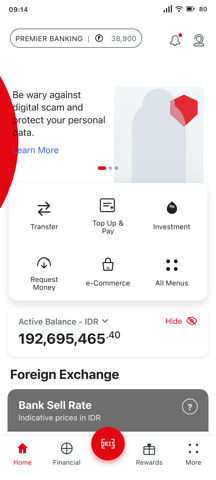
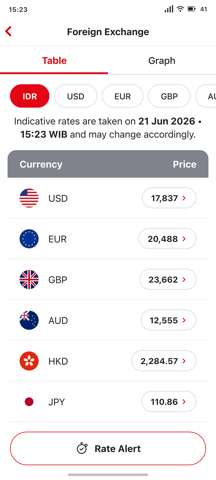
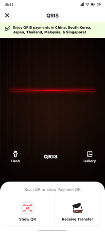
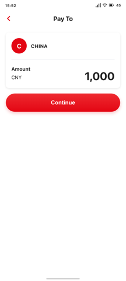
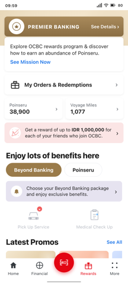

Screens

Dashboard (HOME tab)
Premier Banking header, quick actions, balance, foreign exchange ticker, banner pager.
Open →
Investment Overview
Investment tab with filter chips, product discovery cards, performance pills.
Open →
Foreign Exchange
14-currency exchange rates, two tabs (Table list, Graph chart).
Open →
QR Scan
QRIS scanner with green tips, camera preview, Flash/Gallery, Show QR/Receive Transfer.
Open →
QR Input (Pay To)
Destination after QR scan. Biller card, amount input, Continue button.
Open →
Rewards tab
Premier Banking tier, balance cards, Beyond Banking benefits, Latest Promos.
Open →About
Each card above opens a 360×800dp phone-screen prototype. On a desktop browser the phone is centered on a neutral page background; on a mobile browser the phone fills the screen and scrolls naturally. All in-page links (bottom nav, back arrows, FAB) navigate between screens.
Source files (canonical prototypes, extracted layouts, README files) live
in ../recreate-*/. Build provenance and link map are in
README.md.